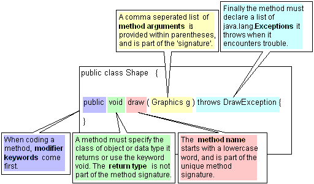

Member methods. |
member
variables |
| A method is similar
to a function() call in other programming languages.  Each method in a class must have a unique ‘signature’,
which is the combination of the method name and the number and types
of arguments in the parameter list. package my.pets;
public class Cat extends Pet {
//Stroke the cat x times
public void stroke(int x) {
}
//Compile Error! - duplicates the method signature above
public Purr stroke(int y) throws ScratchException {
}
}
By convention method names start with a lowercase word, which
is usually a verb or action, and can be followed by any number of
Capitalized words. |
|